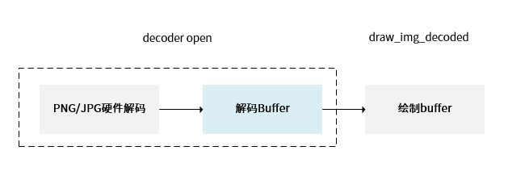
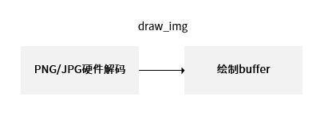

硬件解码对接
通过 lv_img_decoder_t 可以注册硬件解码器接口，从而提升图像加载和渲染的效率。
- 定义一个解码器结构体，并初始化。
void aic_dec_create() { lv_img_decoder_t *aic_dec = lv_img_decoder_create(); /* init frame info lists */ mpp_list_init(&buf_list); lv_img_decoder_set_info_cb(aic_dec, aic_decoder_info); lv_img_decoder_set_open_cb(aic_dec, aic_decoder_open); lv_img_decoder_set_close_cb(aic_dec, aic_decoder_close); } - 实现 aic_decoder_info 回调函数，用于获取图片的宽度、高度和格式信息。
- 实现 aic_decoder_open 回调函数，用于申请解码输出 buffer。
- 实现 aic_decoder_close 回调函数，用于释放硬件解码资源。
- 在绘制函数 draw_img_decoded中，通过注册解码器回调去获取需要的解码后数据，默认的图片处理流程如下所示：
图 1. draw_img_decoded -
采用此流程需要额外申请一块解码 buffer，占用内存增加。
-
缓存解码后的 buffer，下次再显示同样的 image，不用重复解码，加快 UI 加载速度。
当绘制函数为 draw_img 时，硬件解码在函数 draw_img 内部，无需注册解码回调函数，默认不采用此方法。在内存受限的场景下，可以评估此方法是否可满足场景需求。

图 2. draw_img -
采用此流程无需额外申请解码 buffer，直接解码到绘制 buffer
-
当需要进行 alpha blending 的时候，此方法不可行
-
每次都要重新对 image 解码，速度不如 draw_img_decoded
-
当硬件解码不支持裁剪的时进行局部更新，此方法不可行
-
- 通过 lv_img_cache_set_size 设置缓存的图片数量，以优化 UI
流畅性。
如果图片的读取时间或者解码时间比较长，采用图片缓存机制可以提升 UI 流畅性：
-
打开或关闭图片缓冲机制
在 lv_conf.h 文件中，采用 lv_img_decoder_t 提供的接口注册的解码器，控制是否启用 LVGL 内部的图片缓冲机制：- 宏定义 LV_IMG_CACHE_DEF_SIZE 为 1 表示打开图片缓冲机制。
- 宏定义 LV_IMG_CACHE_DEF_SIZE 为 0 表示关闭图片缓冲机制。
- 设置缓存的图片张数
通过 void lv_img_cache_set_size(uint16_t entry_cnt) 来设置缓冲的图片张数
图以张数为单位进行缓存。例如，设置缓存的图片张数为 10。
- 图片缓存价值判断
当图片缓存到设置的最大张数时，如果需要新的缓存，图片缓存机制内部会进行图片缓存价值的判断。 例如，某张图片解码的时间比较久或使用频繁高，则其缓存价值打分会更高，需要优先缓存这类图片。
-
函数 |
说明 |
|---|---|
aic_decoder_info |
获取图片宽、高、图片格式信息 |
aic_decoder_open |
申请解码输出 buffer，硬件解码输出 |
aic_decoder_close |
释放硬件解码资源（包括输出 buffer） |